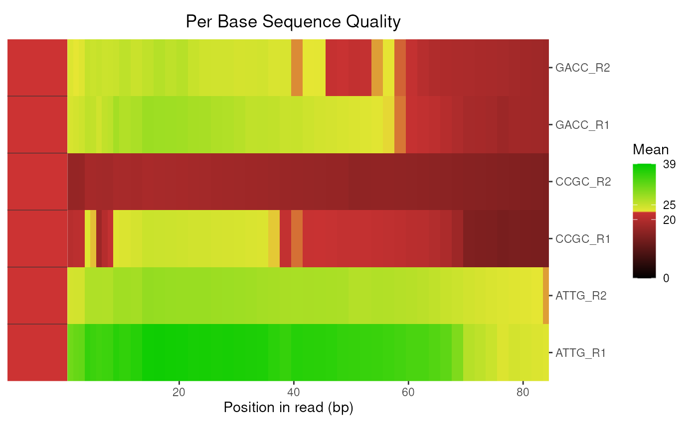
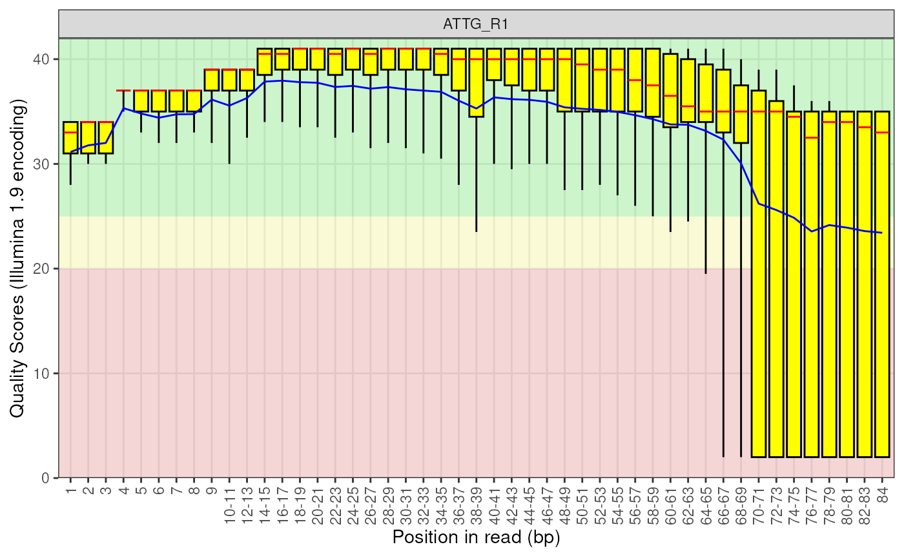
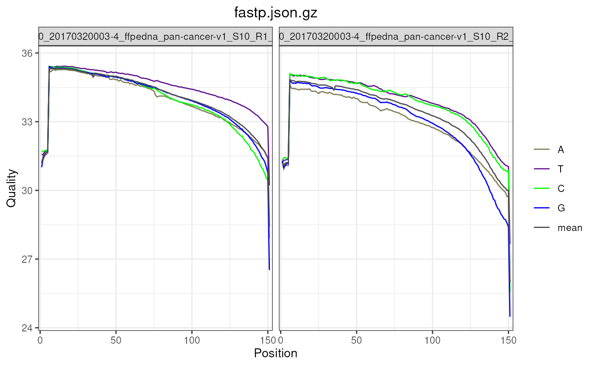

Plot the Base Qualities for each file as separate plots
plotBaseQuals(x, usePlotly = FALSE, labels, pattern = ".(fast|fq|bam).*", ...)
# S4 method for class 'ANY'
plotBaseQuals(x, usePlotly = FALSE, labels, pattern = ".(fast|fq|bam).*", ...)
# S4 method for class 'FastqcData'
plotBaseQuals(
x,
usePlotly = FALSE,
labels,
pattern = ".(fast|fq|bam).*",
pwfCols,
warn = 25,
fail = 20,
boxWidth = 0.8,
showPwf = TRUE,
plotlyLegend = FALSE,
...
)
# S4 method for class 'FastqcDataList'
plotBaseQuals(
x,
usePlotly = FALSE,
labels,
pattern = ".(fast|fq|bam).*",
pwfCols,
warn = 25,
fail = 20,
showPwf = TRUE,
boxWidth = 0.8,
plotType = c("heatmap", "boxplot"),
plotValue = "Mean",
cluster = FALSE,
dendrogram = FALSE,
nc = 2,
heat_w = 8L,
...
)
# S4 method for class 'FastpData'
plotBaseQuals(
x,
usePlotly = FALSE,
labels,
pattern = ".(fast|fq|bam).*",
pwfCols,
warn = 25,
fail = 20,
showPwf = FALSE,
module = c("Before_filtering", "After_filtering"),
reads = c("read1", "read2"),
readsBy = c("facet", "linetype"),
bases = c("A", "T", "C", "G", "mean"),
scaleColour = NULL,
plotTheme = theme_get(),
plotlyLegend = FALSE,
...
)
# S4 method for class 'FastpDataList'
plotBaseQuals(
x,
usePlotly = FALSE,
labels,
pattern = ".(fast|fq|bam).*",
pwfCols,
warn = 25,
fail = 20,
showPwf = FALSE,
module = c("Before_filtering", "After_filtering"),
plotType = "heatmap",
plotValue = c("mean", "A", "T", "C", "G"),
scaleFill = NULL,
plotTheme = theme_get(),
cluster = FALSE,
dendrogram = FALSE,
heat_w = 8L,
...
)Can be a FastqcData, FastqcDataList or character
vector of file paths
logical Default FALSE will render using
ggplot. If TRUE plot will be rendered with plotly
An optional named vector of labels for the file names. All filenames must be present in the names.
Regex to remove from the end of the Fastp report and Fastq file names
Used to pass additional attributes to theme() and between methods
Object of class PwfCols() to give colours for
pass, warning, and fail values in plot
The default values for warn and fail are 30 and 20 respectively (i.e. percentages)
set the width of boxes when using a boxplot
Include the Pwf status colours
logical(1) Show legend for interactive plots. Only called when drawing line plots
character Can be either "boxplot" or
"heatmap"
character Type of data to be presented. Can be
any of the columns returned by the appropriate call to getModule()
logical default FALSE. If set to TRUE,
fastqc data will be clustered using hierarchical clustering
logical redundant if cluster is FALSE
if both cluster and dendrogram are specified as TRUE
then the dendrogram will be displayed.
numeric. The number of columns to create in the plot layout.
Only used if drawing boxplots for multiple files in a FastqcDataList
Relative width of any heatmap plot components
Select Before and After filtering when using a FastpDataList
Create plots for read1, read2 or all when using a FastpDataList
If paired reads are present, separate using either linetype or by facet
Which bases to include on the plot
ggplot discrete colour scale, passed to lines
theme object
ggplot2 continuous scale. Passed to heatmap cells
A standard ggplot2 object or an interactive plotly object
When acting on a FastqcDataList, this defaults to a heatmap
using the mean Per_base_sequence_quality score. A set of plots which
replicate those obtained through a standard FastQC html report can be
obtained by setting plotType = "boxplot", which uses facet_wrap
to provide the layout as a single ggplot object.
When acting an a FastqcData object, this replicates the
Per base sequence quality plots from FastQC with no faceting.
For large datasets, subsetting by R1 or R2 reads may be helpful.
An interactive plot can be obtained by setting usePlotly = TRUE.
# Get the files included with the package
packageDir <- system.file("extdata", package = "ngsReports")
fl <- list.files(packageDir, pattern = "fastqc.zip", full.names = TRUE)
# Load the FASTQC data as a FastqcDataList object
fdl <- FastqcDataList(fl)
# The default plot for multiple libraries is a heatmap
plotBaseQuals(fdl)

# The default plot for a single library is the standard boxplot
plotBaseQuals(fdl[[1]])

# FastpData objects have qyalities by base
fp <- FastpData(system.file("extdata/fastp.json.gz", package = "ngsReports"))
plotBaseQuals(
fp, plotTheme = theme(plot.title = element_text(hjust = 0.5))
)
